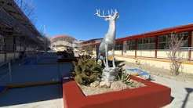
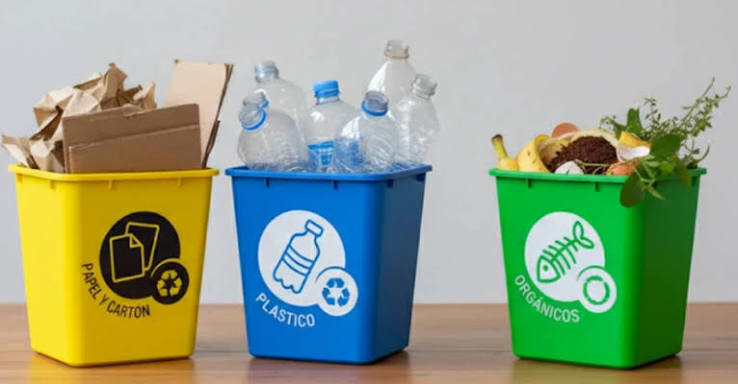
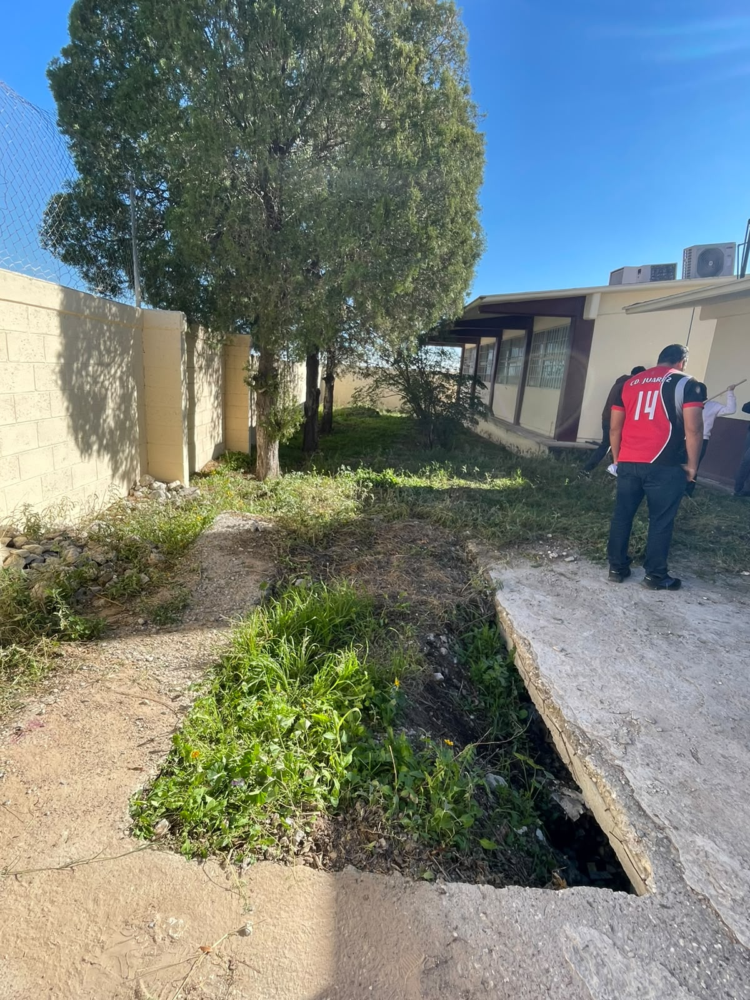
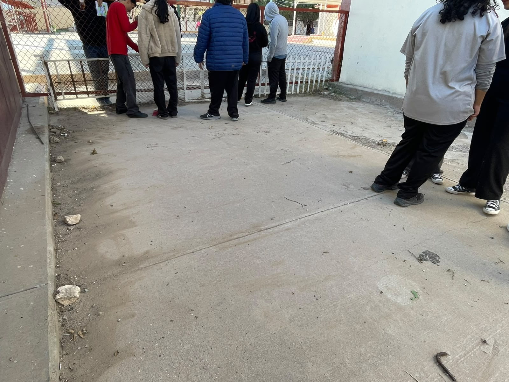

CUIDANDO NUESTRO ENTORNO ESCOLAR
Bienvenido al portal sobre ecología del CBTis 269 PAEC Ecovenados Transformando el Futuro. Nuestro compromiso es fomentar la conciencia ecológica, el reciclaje y la reforestación dentro y fuera de nuestro plantel.
A través de acciones colectivas entre estudiantes, docentes y directivos, transformamos los espacios verdes y promovemos hábitos sustentables para toda la comunidad educativa.
Nuestro objetivo es promover la participación de la comunidad educativa en la reducción y manejo adecuado de los residuos sólidos, así como en la recuperación y ampliación de las áreas verdes del plantel,
mediante acciones de concientización, limpieza, reciclaje y reforestación que contribuyan al cuidado del medio ambiente y al mejoramiento de los espacios escolares.
"No tenemos que esperar a que otros cambien el mundo, cada botella separada y cada árbol cuidado hoy es el futuro que construimos".

MANTENIMIENTO
Jornadas de limpieza y conservación de áreas verdes del plantel.

RECICLAJE
Separación de residuos y reutilización de materiales en el aula.
EJES DEL PROYECTO
REFORESTACIÓN
Plantación y cuidado de especies nativas adaptadas al clima de nuestra región para mejorar la calidad del aire y generar sombra.
EDUCACIÓN AMBIENTAL
Campañas informativas dirigidas a los jóvenes bachilleres sobre el uso responsable del agua y la energía.
GESTIÓN DE RESIDUOS
Instalación de puntos ecológicos estratégicos para la recolección de plástico, papel y aluminio dentro de la institución.
EVIDENCIAS Y ACTIVIDADES

Problema de basura en el plantel

Limpieza grupal a áreas verdes de una secundaria

Participacion de la escuela en otras áreas de la secundaria
RETO DIDÁCTICO: SEPARA CORRECTAMENTE
Demuestra cuánto sabes sobre reciclaje eligiendo el contenedor correcto para cada residuo.
Cargando residuo...
Puntaje: 0 de 5
MI COMPROMISO CON EL RECICLAJE
Completa el cuestionario para registrar tus hábitos ecológicos y elegir tu compromiso ambiental.
REFERENCIAS BIBLIOGRÁFICAS (APA)
- ASECA. (2019, 11 de febrero). Residuos orgánicos. ASECA Recolección de Residuos. https://aseca.com
- Comisión Nacional de Áreas Naturales Protegidas. (2020, 25 de diciembre). Las tres "erres" mágicas. Gobierno de México. https://www.gob.mx
- Greenpeace México. (2026). Problemas ambientales: una crisis que nos involucra a todos. Greenpeace. https://greenpeace.org
- Organización de las Naciones Unidas. (2023). Contaminación por plásticos: soluciones para un planeta limpio. Programa de las Naciones Unidas para el Medio Ambiente. https://unep.org
- Padilla, A. (2022, 26 de julio). ¿Qué es el reciclaje? UAG Media Hub, Universidad Autónoma de Guadalajara. https://uag.mx
- Procycla. (s.f.). Residuos inorgánicos: características y tratamiento. Procycla. https://procycla.cl
- Secretaría de Medio Ambiente y Recursos Naturales. (2021). Ley General para la Prevención y Gestión Integral de los Residuos. Gobierno de México. https://www.gob.mx